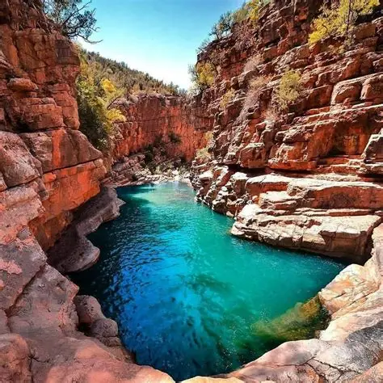
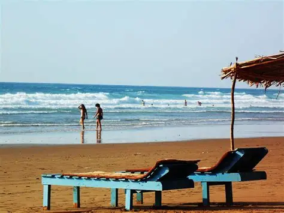
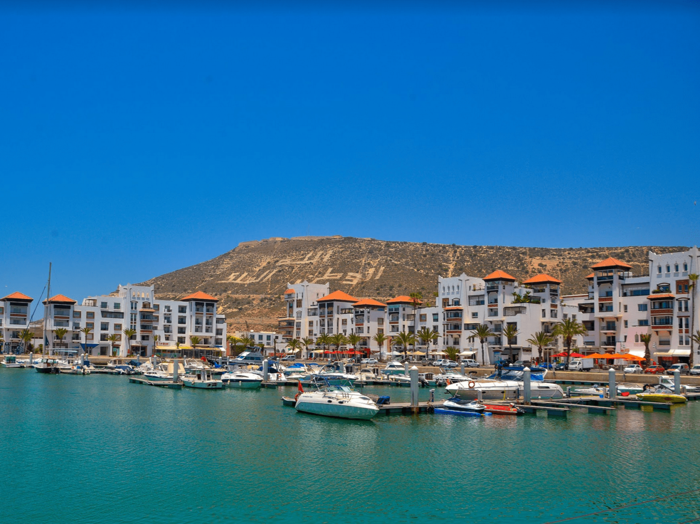
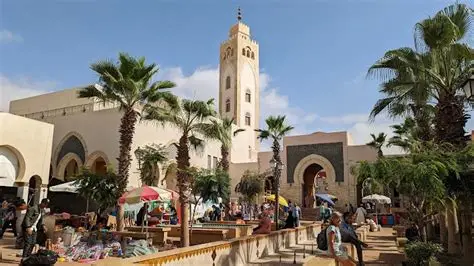
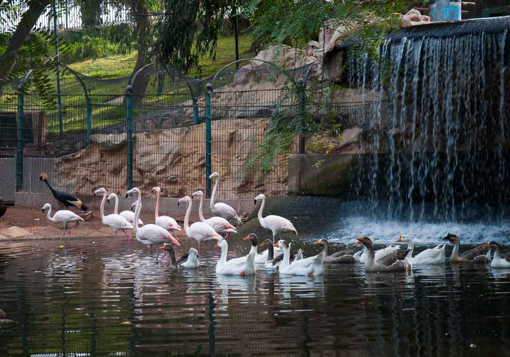
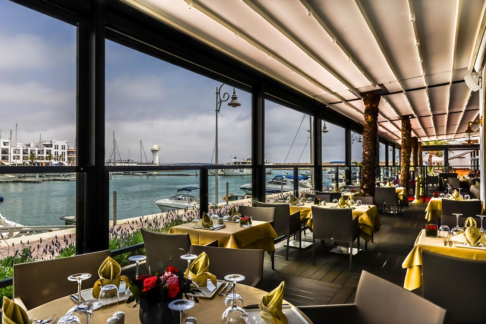
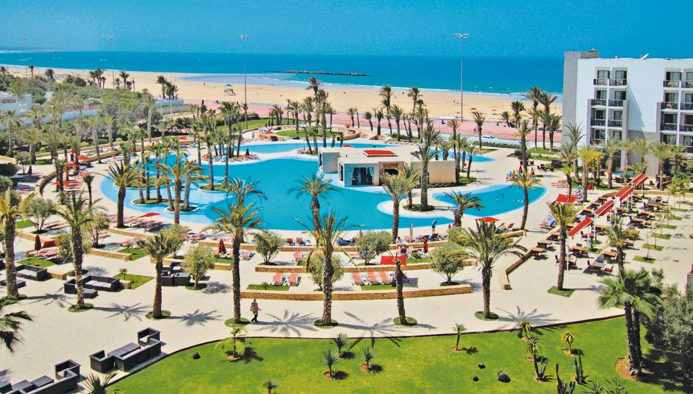

Grande plage, lumière dorée et douceur marine toute l'année
Agadir, principale station balnéaire du Maroc, est célèbre pour sa baie spectaculaire de sable fin s'étirant sur plus de dix kilomètres. Entièrement reconstruite après le séisme de 1960, c'est aujourd'hui une ville moderne et dynamique bénéficiant de plus de 300 jours de soleil par an.
Dominée par les ruines majestueuses de son ancienne Kasbah (Agadir Oufella), la ville offre un panorama saisissant sur le port de pêche actif, la marina moderne et l'immensité de l'océan Atlantique.
Avec ses larges avenues fleuries, ses parcs ombragés et son climat exceptionnellement doux en toutes saisons, Agadir est la destination idéale pour les amateurs de détente, de sports nautiques et d'excursions dans l'arrière-pays du Souss.


L'une des plus longues plages du Maroc, réputée pour son ensoleillement et ses eaux relativement calmes.

Front de mer animé avec cafés, promenades et bateaux. Agréable en soirée pour se promener.

Grand marché couvert proposant artisanat, épices, textiles et produits locaux. À explorer le matin.
Site historique en hauteur offrant un point de vue sur la baie et la ville reconstruite.

Petit parc urbain apprécié des familles, situé en centre-ville. Verdure et calme à deux pas de la plage.
Selon la saison, des excursions vers des vallées et piscines naturelles dans l'arrière-pays soussien.




Grands complexes hôteliers en bord de mer avec piscines, animations et accès direct à la plage.
Établissements bien situés pour explorer la ville, proches des souks et des transports.

Idéal pour les séjours longs ou les familles. Cuisine équipée, plus d'indépendance, tarifs à la semaine.